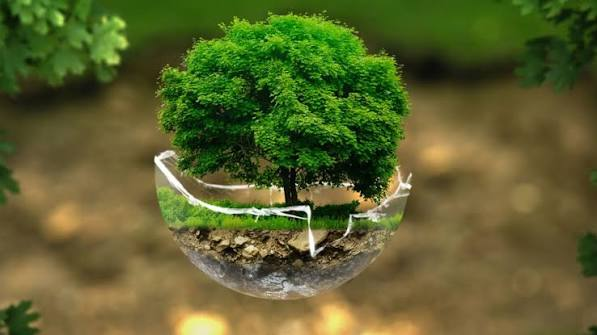

El verde es el color de la vida porque es el color de las plantas. Las células vegetales contienen clorofila, la sustancia que les da su color verde y que les permite hacer la fotosíntesis, es decir, producir su propio alimento a partir de la luz del sol. Sin clorofila no habría plantas, y sin plantas no habría oxígeno ni comida para los demás seres vivos. Por eso el verde se define por su parecido a las hojas frescas y se asocia con la naturaleza, la frescura y todo lo que crece.
Culturalmente, el verde ha representado la vida y la esperanza desde la antigüedad. Los egipcios pintaban de verde la piel del dios Osiris, señor de la vegetación y de la resurrección, para simbolizar la fertilidad y el renacer. Es el color representativo del islam y forma parte de los colores panárabes. En la bandera de México, el verde simboliza la esperanza. En la vida diaria significa "adelante": un semáforo en verde da permiso para pasar. Y en la actualidad el movimiento ecologista, los vegetarianos y los veganos lo usan como su símbolo, justamente por la clorofila de las plantas. El verde es, en todos los sentidos, el color de que la vida continúe.
